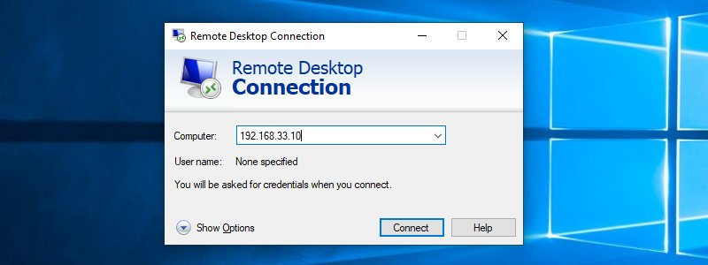
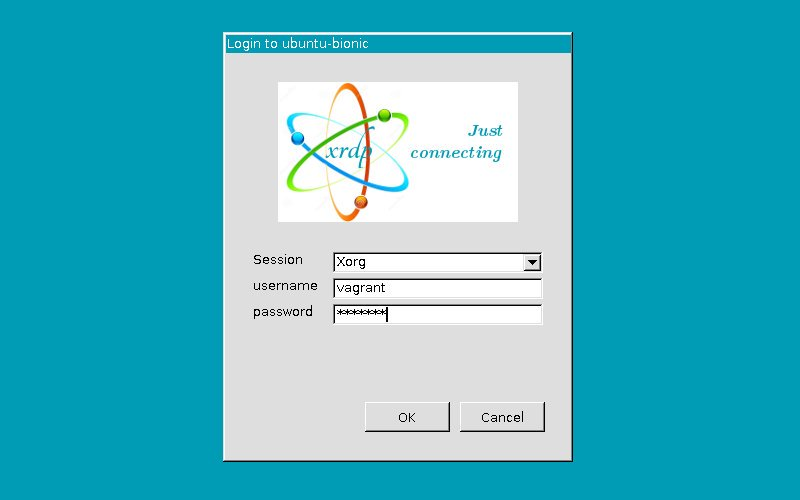
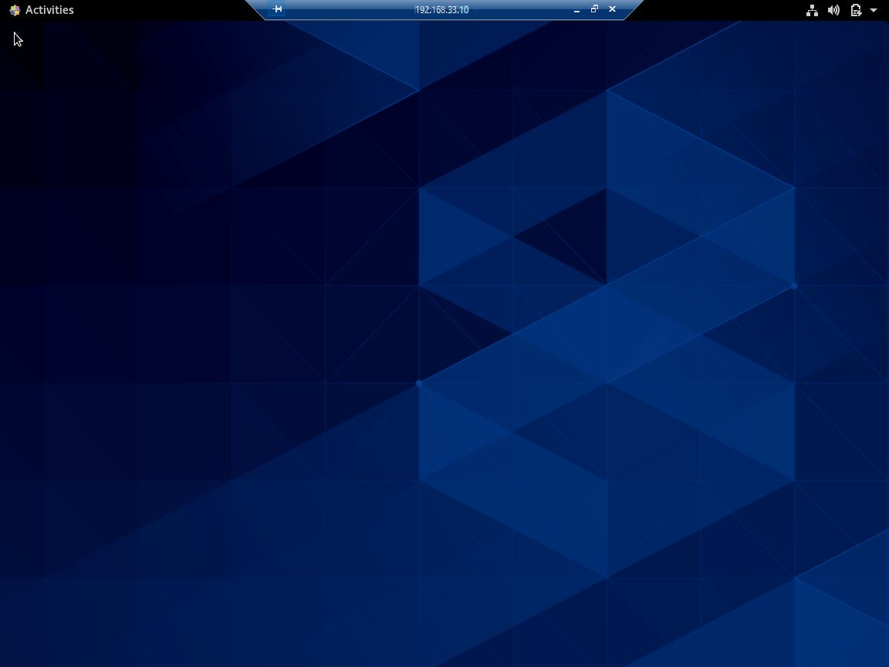

CentOS 8 上 Xrdp 服务器安装教程
Xrdp 是 Microsoft 远程桌面协议 (RDP) 的开源实现，允许您以图形方式控制远程系统。使用 RDP ，您可以登录到远程计算机并创建真实的桌面会话，就像登录本地计算机一样。
本教程说明了如何在 CentOS 8 上安装和配置 Xrdp 服务器。
如果您更喜欢开源替代方案，请查看 VNC 。
安装桌面环境
通常， Linux 服务器没有安装桌面环境。如果要连接的计算机没有 GUI ，您的第一步是安装 GUI。否则，请跳过此步骤。
Gnome 是 CentOS 8 中的默认桌面环境。要在远程计算机上安装 Gnome ，请运行以下命令
sudo dnf groupinstall "Server with GUI"
根据您的系统，下载和安装 Gnome 软件包以及相关性可能会花费一些时间。
安装 Xrdp
Xrdp 软件包包含在标准 CentOS 8 存储库中。要安装它，请运行：
sudo dnf install xrdp
安装过程完成后，设置随机启动并启动 Xrdp 服务：
sudo systemctl enable xrdp --now
您可以通过键入以下命令来验证 Xrdp 是否正在运行：
sudo systemctl status xrdp
输出将如下所示：
● xrdp.service - xrdp daemon
Loaded: loaded (/usr/lib/systemd/system/xrdp.service; enabled; vendor preset: disabled)
Active: active (running) since Sun 2020-02-02 18:30:43 UTC; 11s ago
...
配置 Xrdp
Xrdp 配置文件位于 /etc/xrdp 目录中。对于常规 Xrdp 连接，只需将 Xrdp 设置为使用 Gnome ，请在文本编辑器中打开 /etc/xrdp/xrdp.ini 文件：
sudo nano /etc/xrdp/xrdp.ini
在 /etc/xrdp/xrdp.ini 文件末尾添加以下行：
exec gnome-session
保存文件并重新启动 Xrdp 服务：
sudo systemctl restart xrdp
配置防火墙
默认情况下， Xrdp 侦听所有接口上的 3389 端口。如果在 CentOS 计算机上运行防火墙，则需要添加一条规则以允许 Xrdp 端口上的通信。
通常，您只希望允许从特定 IP 地址或 IP 范围访问 Xrdp 服务器。例如，要仅允许来自 192.168.1.0/24 的连接，请输入以下命令：
sudo firewall-cmd --new-zone=xrdp --permanent
sudo firewall-cmd --zone=xrdp --add-port=3389/tcp --permanent
sudo firewall-cmd --zone=xrdp --add-source=192.168.1.0/24 --permanent
sudo firewall-cmd --reload
要允许流量 3389 从任何地方移植，请使用以下命令。出于安全原因，强烈建议不要从任何位置进行访问。
sudo firewall-cmd --add-port=3389/tcp --permanent
sudo firewall-cmd --reload
为了提高安全性，您可以考虑将 Xrdp 设置为仅在 localhost 上侦听，并创建 SSH 隧道以将流量从本地计算机上的端口 3389 安全地转发到服务器的同一端口上的。
另一个安全选项是安装 OpenVPN 并通过专用网络连接到 Xrdp 服务器。
连接到 Xrdp 服务器
现在已经配置了 Xrdp 服务器，是时候打开本地 Xrdp 客户端并连接到远程 CentOS 8 系统了。
Windows 用户可以使用默认的 RDP 客户端。在 Windows 搜索栏中键入 “远程桌面” ，然后单击 “远程桌面链接” 。这将打开 RDP 客户端。在“计算机”字段中，键入远程服务器的 IP 地址，然后单击“连接”。

在登录屏幕上，输入您的用户名和密码，然后单击“确定”。

登录后，您应该会看到默认的 Gnome 桌面。它看起来应该像这样：

现在，您可以使用键盘和鼠标从本地计算机开始与远程桌面进行交互。
如果使用的是 macOS ，则可以从 Mac App Store 安装 Microsoft 远程桌面应用程序。 Linux 用户可以使用 RDP 客户端，例如 Remmina 或 Vinagre 。
结论
安装 Xrdp 服务器后，您可以通过易于使用的图形界面从本地台式机管理 CentOS 8 服务器。